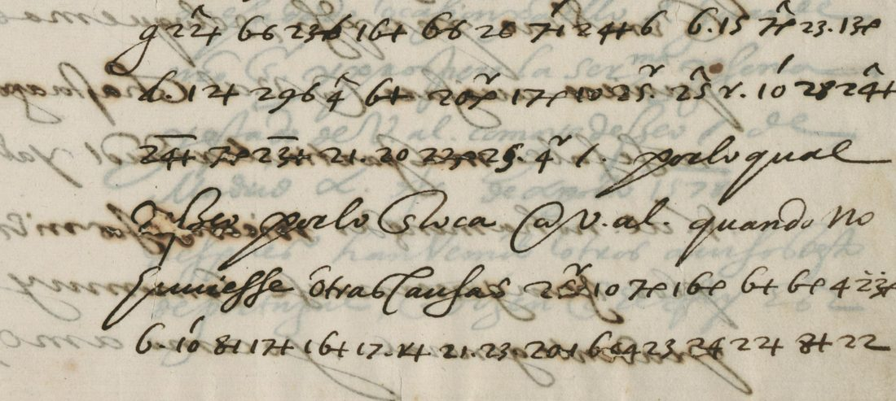

At a glanceKnown key applied · complete
- The letter
- Antonio Pérez, Secretary of State to Philip II, to Don John of Austria, governor general of the Netherlands, filed “Ag.to 19. de 1578”, autograph. Plain Spanish with four cipher passages. It answers the arrival of Don John’s envoy, Don Alonso de Sotomayor.
- Where
- Real Academia de la Historia, Madrid, Library, 2/Ms Caja 8 no. 4 (Fernández San Román collection), images 2–3. Not in the catalogue.
- The cipher
- The numerical syllabary of the Spanish chancery of 1577, a variant of the table of the Genoa embassy: a number is a consonant, a mark after it the vowel, superscripts a final n, s, r or l. In Pérez’s hand 8 is g and an 8 with a small 2 is ble.
- How it was deciphered
- Brice Dudout rebuilt the Genoa table from cipher and descifrada pairs of Simancas (AGS Estado 1410) and froze it. On a fresh pair (1410,65–66, 19 July 1577), transcribed and frozen before the decipherment was opened, it reads 81.3% of words and 87.9% of characters, against at most 16.5% and 47.8% for 200 controls.
- What it says
- The Council of Finance has “not a single real” and so many things to provide; supplying what is needed is “impossible”; and the asiento was accepted under protest that no other will be honoured.
- Still open
- One word of 70 (ningún?); the sense of the verb estragar is uncertain; nine words are probable readings.
- Credit
- Brice Dudout (Europe chiffrée), working with Claude Opus 5.5: identification of the system, key, validation, transcription, reading and English translation, by email of 29 October 2026. To our knowledge the first published decipherment.
01 The letter
In August 1578 Don John of Austria, half-brother of Philip II and governor of the Netherlands, was in the field against the States General and asking Madrid for money. Antonio Pérez answered him in his own hand after the arrival of Don John’s envoy, Don Alonso de Sotomayor. The letter is plain Spanish with four cipher passages, which say that the Council of Finance has “not a single real”, that providing what is needed is “impossible”, and that the asiento just made will not be followed by another. Don John died six weeks later, on 1 October. Pérez was arrested in July 1579 for the murder of Escobedo, Don John’s secretary.
The letter is in the Fernández San Román collection of the Real Academia de la Historia, whose digital library publishes the images under a Public Domain Mark.

02 The cipher
It is neither Pérez’s cipher with Vargas Mexía (1578–1579) nor the “general cipher” of Don John and Escobedo (1576–1577). It is the numerical syllabary found in 1577 in the despatches of the Spanish embassy at Genoa (Simancas, Estado, leg. 1410), with departures peculiar to Pérez. A number is a consonant (6 d, 7 c, 15 l, 16 m, 17 n, 20 p, 22 r, 23 s, 24 t); a mark after it is the vowel (+ a, a dot e, 6 i, a hook o, an i-stroke u); single numbers are vowels (10 a, 4 e, 18 o, 1 u); superscripts are a final n (^), s (a bar), r and l. A draft of 4 February 1577 (Estado 1410,196) announces to the ministers in Italy the change of the “cifra general” but does not contain the table. In Pérez’s hand 8 is g (b in the Genoa table) and an 8 with a small 2 is ble. The key is targets/perez1578/key.tsv (K_P2).
03 How the key was found
A sibling key. The 1577 Genoa table was rebuilt on cipher and descifrada pairs of AGS Estado 1410 and validated on 1410,78–79 (87.3% of words, 95.5% of characters). Four values were learnt on Pérez’s own lines (9 = g, 8 = g, X = r, the i-stroke = u) and 27 = x after the first test below.
Three tests, one decisive. A lexical-coverage test on held-out lines did not separate the key from its controls, because a syllabary yields words even when shuffled; it was declared inconclusive. On the pair 1410,69–70 (4 August 1577), with the cipher frozen before the decipherment was opened, the key reached 72.4% of words and 88.5% of characters against at most 25.3% and 55.7% for 200 controls: significant, but under the 75% word threshold, so not validated. On a fresh pair, 1410,65–66 (Genoa, 19 July 1577; PARES 3576652), the key K_P2 was frozen (SHA-256 4d5eb01d…), twelve cipher lines were transcribed in two passes and frozen before the descifrada was opened, and words containing 8 were excluded by a rule written in advance. Result: 81.3% of words and 87.9% of characters, against at most 16.5% and 47.8% for 200 controls (100 permuted consonant values and 100 shuffled unit orders). The criterion, 0.75 of words and 0.85 of characters and above every control, was met.
04 The reading
Brice Dudout’s text, spelling of the cipher kept. {x} probable; ‹x› unresolved; the text in angle brackets in his file is Pérez’s plain Spanish around the cipher and is not counted.
[…] pero con grandissima dificultad del consejo de hazienda, por no aver un real y tantas cosas que proveer [en claro: por lo qual …]
[…] {ir} acomodado {esso} de alguna {manera} que se {pueda} {estragar}, temiendo el peligro de los sucesos, estando lo de la hazienda tan {estrecho} que tengo por {imposible} del poderse acudir con tanto como es menester [en claro: y advierto a V. Al. …]
[…] ha sido con protesto de que no se {cunplira} ‹ningun› otro, y que asi me ha {dicho} [en claro: lo advierto a V. Al. …]
[…] but with the greatest difficulty on the part of the Council of Finance, since there is not a single real and so many things to provide for [in plain text: for which reason …]
[…] to go and arrange this in some way that may be spoiled (?), for fear of the danger of events, the finances being so tight that I hold it impossible to be able to supply as much as is needed [in plain text: and I warn Your Highness …]
[…] has been made under protest that no ‹other› will be honoured, and so I have been told [in plain text: I point this out to Your Highness]
The full text and translation, with the transcription and the unit-by-unit decryption, are under Full texts below.
05 What remains uncertain
- ‹ningun›: the signs give u-cin-gan (or nin-gan if 1 and 7 form 17). Ningún otro is expected, but gan contradicts the u; the word is left unresolved.
- {ir}: the first sign of the second passage is blotted; the 2 (= i) and the superscript for r can be seen (probable).
- {estrecho}, {dicho}: a barred 7 followed by a hook stands for cho both times, as the words require; the sign is not attested elsewhere (probable).
- {imposible}: sign 14. “por 14 16 po si 8²”: 16 = m, 8² = ble, so 14 is i here (in the Genoa table 14 = gu). One occurrence (probable).
- {cunplira}: the 7 with an i-stroke carries an oblique superscript stroke, read as ^ (= n); “no se cunplira” is required by “con protesto de que” (probable).
- {estragar}: the letters s-t-ra-ga-r are certain (8 = g in Pérez’s hand); the exact sense of the verb in the sentence is uncertain.
- Prior work: no edition found in Mignet (1845), in the CODOIN, in Cryptiana or in recent work on the San Román collection (Ávila Seoane, 2024, on Don John’s autographs). Not checked: Gregorio Marañón, Antonio Pérez (1947), whose appendices print many of Pérez’s letters; if the letter is edited there, the present reading becomes an independent check of it.
Full texts
The transcription and the decryption of every document on this page, so that the reading can be used and checked. Short files are shown here; all are in the repository.
Antonio Pérez to Don John of Austria, 19 Aug 1578, four cipher passages
The Council of Finance has "not a single real"; supplying what is needed is impossible; the asiento was accepted under protest that no other will be honoured.
Transcription
# RAH (Madrid), 2/Ms Caja 8 no. 4, Antonio Pérez to don Juan de Austria, 19 Aug 1578: the four cipher passages. # Neutral notation: NUMBER[:MARK][SUPERSCRIPT] ; marks + . 6 e(hook) 1(i-stroke) ; superscripts ^ _ v(r-shaped) ' 2(small 2) ; # X = r-shaped sign on the line ; @mo = letters "m" + hook ; | = writer's punctuation ; ? = doubtful. ## P2A (img 02, after "el despacho que lleva este correo") P2AL0 20:. X:e 7:e^ P2AL1 9 22:+^ 6:6 23:6 16:+ 6:6 26 7:1' 24:+ 6 6:. 15 7:e^ 23:. 13:e P2AL2 6:. 12:+ 29:6 4^ 6:+ 20:ev 17:e 10 25:.v 25^ X:. 10' 28 24:+^ P2AL3 24:+_ 7:e 23:+_ 21:. 20 22:e 25:.? 4v | ## H_P2B (img 02, after "quando no huviesse otras causas") P2BL0 2?v 10 7:e 16:e 6:+ 6:e 4 23:ev? P2BL1 6:. 10' 8:1 17:+ 16:+ 17:. 24? 21:. 23:. 20:1 6:+? 4? 23 24 22:+ 8:+ 22 ## P3A12 (img 03, lines 1-2) P3AL1 24:. 16:6 4^ 6:e 4' 20:. 15:6 8 22:e 6:. 15:e_ 23:1 7:. 23:e_ 4_ P3AL2 24:+^ 6:e 15:e 6:. 15:+ 12:+ 29:6 4^ 6:+ 24:+^ 4_ 24 22:. 7:e? 21:. ## H_P3A34 (img 03, lines 3-4, up to "y advierto a V. Al.") P3AL3 24:.^ 8:e 20:ev 14 16 20:e 23:6 82 6:.' 20:e 6:. X 23:. 10 7:1 6:6v P3AL4 7:e^ 24:+^ 24:e 7:e @mo 4_ 16:. 17:._ 24:.v | ## H_P3B (img 03, after "ha hecho deste assiento") P3BL0 12:+ 23:6 6:e 7:e^ 20 X:e 24:._ 24:e P3BL1 6:. 21:. 17:e 23:. 7:1' 20 15:6 22:+ 1 7:6^? 11:+^? 18 24 22:e | 28 P3BL2 21:. 10 23:6 16:. 12:+ 6:6? 7:e
Decryption
# Unit-by-unit decryption with key.tsv (K_P2, SHA-256 4d5eb01d...). "?" = sign not in the key. ## P2AL0 20:. X:e 7:e^ pe ro con ## P2AL1 9 22:+^ 6:6 23:6 16:+ 6:6 26 7:1' 24:+ 6 6:. 15 7:e^ 23:. 13:e g ran di si ma di fi cul ta d de l con se jo ## P2AL2 6:. 12:+ 29:6 4^ 6:+ 20:ev 17:e 10 25:.v 25^ X:. 10' 28 24:+^ de ha zi en da por no a ver vn re al y tan ## P2AL3 24:+_ 7:e 23:+_ 21:. 20 22:e 25:.? 4v | tas co sas que p ro ve er / ## P2BL0 2?v 10 7:e 16:e 6:+ 6:e 4 23:ev? ? a co mo da do e sor ## P2BL1 6:. 10' 8:1 17:+ 16:+ 17:. 24? 21:. 23:. 20:1 6:+? 4? 23 24 22:+ 8:+ 22 de al gu na ma ne t que se pu da e s t ra ga r ## P3AL1 24:. 16:6 4^ 6:e 4' 20:. 15:6 8 22:e 6:. 15:e_ 23:1 7:. 23:e_ 4_ te mi en do el pe li g ro de los su ce sos es ## P3AL2 24:+^ 6:e 15:e 6:. 15:+ 12:+ 29:6 4^ 6:+ 24:+^ 4_ 24 22:. 7:e? 21:. tan do lo de la ha zi en da tan es t re co que ## P3AL3 24:.^ 8:e 20:ev 14 16 20:e 23:6 82 6:.' 20:e 6:. X 23:. 10 7:1 6:6v ten go por gu m po si ? del po de r se a cu dir ## P3AL4 7:e^ 24:+^ 24:e 7:e @mo 4_ 16:. 17:._ 24:.v | con tan to co ? es me nes ter / ## P3BL0 12:+ 23:6 6:e 7:e^ 20 X:e 24:._ 24:e ha si do con p ro tes to ## P3BL1 6:. 21:. 17:e 23:. 7:1' 20 15:6 22:+ 1 7:6^? 11:+^? 18 24 22:e | 28 de que no se cul p li ra u cin gan o t ro / y ## P3BL2 21:. 10 23:6 16:. 12:+ 6:6? 7:e que a si me ha di co
Reading
# Established text (Spanish, cipher spelling kept)
{x} probable; ‹x› unresolved; <x> = Pérez's plain text around the cipher (not counted).
<[…] el despacho que lleva este correo,> pero con grandissima dificultad del consejo de hazienda, por no aver un real y tantas cosas que proveer <, por lo qual […]>
<[…] quando no huviesse otras causas,> {ir} acomodado {esso} de alguna {manera} que se {pueda} {estragar}, temiendo el peligro de los sucesos, estando lo de la hazienda tan {estrecho} que tengo por {imposible} del poderse acudir con tanto como es menester <, y advierto a V. Al. […]>
<[…] la aceptación que el consejo de hazienda ha hecho deste assiento> ha sido con protesto de que no se {cunplira} ‹ningun› otro, y que asi me ha {dicho} <. Lo advierto a V. Al. […]>Translation
# English translation […] but with the greatest difficulty on the part of the Council of Finance, since there is not a single real and so many things to provide for [in plain text: for which reason …] [In plain text: … even if there were no other reasons,] to go and arrange this in some way that may be spoiled (?), for fear of the danger of events, the finances being so tight that I hold it impossible to be able to supply as much as is needed [in plain text: and I warn Your Highness …]. [In plain text: … the acceptance that the Council of Finance has made of this asiento] has been made under protest that no ‹other› will be honoured, and so I have been told [in plain text: I point this out to Your Highness].
Key: key.tsv
06 Sources
- Real Academia de la Historia, Biblioteca Digital, 2/Ms Caja 8 no. 4, images 2–3: catalogue record (Public Domain Mark 1.0).
- Key sibling: AGS Estado 1410, ciphers and descifradas of the embassy at Genoa, 1577; validation pair 1410,65–66 (PARES 3576652).
- Brice Dudout, Europe chiffrée: Pérez to Don John, 1578 (2026).
- F. Mignet, Antonio Pérez et Philippe II (1845); Colección de documentos inéditos para la historia de España, checked by Brice Dudout.
Folder: targets/perez1578/ (notes, transcription, decryption, reading, translation and key, as contributed by Brice Dudout).